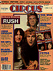

"Rush's simpler Signals "
by Philip Bashe
Taken from Circus -- November 30, 1982
If there's one thing rock journalists dread more than watery drinks
at press functions, it's facing the wrath of Rush fans disgruntled
over a less than favorable review. Not only are they a vocal lot who
will gladly spring for the postage in order to castigate the
offending scribe, but they're unusually articulate. Basically
intelligent fans for a basically intelligent band; it's a unique
relationship.
Rush's use of rhythms that switch gears in midstream might put off
less adventurous listeners whose pulses are locked into 4/4 time. And
their lyrics, penned by drummer Neil Peart, encompass themes of
individualism and the evils of technology, usually set ln a sci-fi
panorama; out of eight studio LPs, there's not a typical paean to
sex, drugs and rock & roll in the bunch. And Rush fans thrive on it.
If what the group does goes over their heads, it's only those of
younger fans who stand under five feet tall. That Rush can address
their audience on a discerning level -- and have it understood -- is
something they're highly appreciative of.
 "It's a nice aspect," says bassist Geddy Lee, "although of course you
can't relate to everybody on that level; we're talking about a large
cross-section of people. But we've always had a very simple approach
to our music: We never play down to our audience. We try to appeal to
what we consider to be the ideal fan -- someone whose taste is
closely aligned with ours."
"It's a nice aspect," says bassist Geddy Lee, "although of course you
can't relate to everybody on that level; we're talking about a large
cross-section of people. But we've always had a very simple approach
to our music: We never play down to our audience. We try to appeal to
what we consider to be the ideal fan -- someone whose taste is
closely aligned with ours."
Rush's last three LPs have gone Top 10, quite a feat for a band whose
music is so atypical of most commercial success. Signals
(Mercury), their 10th album overall, should be their biggest yet. On this
record, even moreso than on last year's Moving Pictures
and 1980's
Permanent Waves, the music's jagged edges have been softened and the
rhythms are less frenzied. Synthesizers replace what normally would
be solo space for guitarist Alex Lifeson, who enriches songs like
"Losing It" and "Chemistry" with atmospheric sun bursts of color. Why
the modification of sound? Lee credits some of the music the band has
listened to during the past year, like one of Peart's favorite
records, Ultravox's moody, layered Vienna.
It's also a case of artistic maturity. In Rush's early stages, Lee
admits, "We were not very good technically. When you're a young
musician your goal is simply to become better. There are some good
ends, but sometimes you find yourself being complicated for the sake
of complication, which doesn't always make for good music." After
completing their last concept LP 1978's Hemispheres,
Rush were at a
point where they no longer felt compelled to prove their proficiency
by uncoiling songs into lengthy epics. "We realized," says Lee, "that
one element often lacking in our music was feel. And we're finding
that working in a shorter framework, which we used to think was the
easy way out, isn't really easy at all. It comes down to being
confident in our musicianship."
That is what Rush fans care about the most: the music. According to
Michael McLoughlin, a long time Rush associate who oversees the
band's merchandising and heads the 10,000-member Rush fan club, many
of them are musicians. They admire singer Lee for his impossible high
notes, Lifeson for his digital dexterity and Peart for his stick
flourishes. On stage, the group is tame by most standards: Lee stands
virtually motionless behind the mike stand, moving his hands rapidly
across his bass neck and pressing his foot pedals. Lifeson also
doesn't move much, as he concentrates on meticulous solos and fills.
And Peart is seen from the audience as a mere head bobbing up and
down in a sea of cymbals and tom-toms. Acrobatics are kept to a
minimum. But Rush fans allow them that; they understand how
physically difficult performing much of the material is.
"They're pretty mature," McLoughlin says of the group's audience.
"They 're not interested in what Geddy's favorite color is or what
kind of girls the group likes. There's no real sex symbol in the
band, so it doesn't attract that sort of fan." Where live rock's
appeal partly lies in the simple peddling of sex, Rush fans
appreciate their heroes from the shoulders up.
But as they get bigger, cautions Lee, "there's more of an interest in
the other, non-musical side of the band. The real dedicated fan wants
to know everything about you." And that presents a problem. Lee and
Lifeson are reserved men who cherish their privacy, and Peart is even
more adamant about his dread of stardom. (Sample these lyrics from
"Limelight": "Cast in this unlikely role/one must put up barriers to
keep oneself intact.")
For Geddy Lee, it became such a struggle that he was forced to vacate
Toronto for the outlying countryside. With his long dark hair and
prominent nose, he's easily recognizable, and life became
intolerable. "My home life was havoc; people wouldn't leave me alone
and I had no peace of mind. But since I've moved out to the country,
I've been able to get a better perspective on it, and I deal with
fame much better."
The majority of fans respect the group's wishes for privacy, says
Lee, "but there's always a fringe which doesn't understand -- and
will never understand -- that an artist's main responsibility is to
perform well. And that's where it ends."
Lee is asked if he finds the basic relationship between fan and star
unfair: The fan is usually allowed to be a voyeur into the
celebrity's life, but it's rarely reciprocal. "I don't know," he
says, mulling over the question before posing one of his own. "Where
do the fan and artist really meet? Through music. Everything we do,
all our emotions and things we want to say, we put into our music.
"And when we're in the concert hall together, and we're playing and
they're responding, and it's one of those nights where everything is
going well, that should be communication enough."
Private as they are, Rush do attempt to make contact in other ways.
The concert setting in the U.S. and Canada disturbs Lee because its
immensity makes interaction difficult. "The whole system is geared to
size: twenty thousand-seat halls, twenty thousand kids, sections
being roped off. It's geared to keep the fan away from the guy in the
band, and that's alienating. We always try to get around that."
One way is to sign autographs after the show, which Rush almost
always do, and to answer fan mail. Because the volume of mail has
escalated along with the band's popularity, that has become an almost
impossible task.
Lyricist Peart especially gets inundated with mail, much of it from
zealots who believe they've discovered the "message" behind his
words, even though, as he's stressed many times, "We are not a
message band."
"Some of it's pretty weird," says Lee, "religious connotations,
messages from God; all these things we're supposed to be saying.
'Hello, sports fans, here's a message . . . ' "
It can be unsettling at times. Peart once cracked that the group
could start a "Flake of the Week Club" based on some of its mail --
letters from guys who send in their pictures and offer to assist the
band on its next album, or from those who have a plan to save the
world and need Rush's help. On the other hand there are the other
letters, which Lee says are from people "who just want to say thank
you. They're really gratifying."
But there's no substitute for the adulation of the crowds, and as Lee
speaks, the band is finishing rehearsals for its fall-winter U.S.
tour (which began in Green Bay, Wisconsin on September 3). Their
entourage of stagehands and roadies remains intact, which is typical
of Rush's organization: Just as they relish privacy, they covet
stability, having used the same producer (Terry Brown) since Rush in
1974 and the same manager (Ray Danniels) from the beginning. "I
really like that consistency," says Lee. "There's enough change going
on around us."
Musically, they've remained true to their origins, although Lee's
one-time remark about wanting to be "the world's smallest symphony
orchestra" no longer is valid; Signals bears testimony to that. "The
world's smallest symphony orchestra," Lee repeats with a laugh.
"Yeah, I guess that's sort of changed."
Rush have almost single-handedly advanced heavy metal beyond a mere
onslaught of volume, density and cries of nihilism. It seems, given
the current state of heavy rock, in which every thing sounds like
rehashes of Led Zeppelin II, that few have picked up on Rush's lead.
Lee agrees.
"It all sounds the same now. At one point it all came charging back
and had a lot of energy, but it hasn't really gone anywhere. It's
just become a commercial thing, all pasteurized and homogenized.
Anyone can pick up a book and say, 'Hey, let's learn how to be a
heavy-metal band: a) Get lots of amps. b) Have lots of explosions. c)
Dress up and d) Let's use these four chords... '
"I think it's gotten really terrible."
But ironically, that lack of vision, and perhaps ability, of their
peers has heightened Rush's impact, and is one of the reasons so many
fans look to them for musical excellence -- there's not much else out
there.
"Yeah. I'll tell ya, about our technical prowess...
"It seems as we've grown, the music around us has gotten simpler.
Every thing around us," Lee concludes with a chuckle, "is
legitimizing us all to hell!"
 "It's a nice aspect," says bassist Geddy Lee, "although of course you
can't relate to everybody on that level; we're talking about a large
cross-section of people. But we've always had a very simple approach
to our music: We never play down to our audience. We try to appeal to
what we consider to be the ideal fan -- someone whose taste is
closely aligned with ours."
"It's a nice aspect," says bassist Geddy Lee, "although of course you
can't relate to everybody on that level; we're talking about a large
cross-section of people. But we've always had a very simple approach
to our music: We never play down to our audience. We try to appeal to
what we consider to be the ideal fan -- someone whose taste is
closely aligned with ours."{kind=link}
{kind=link}
{kind=link}